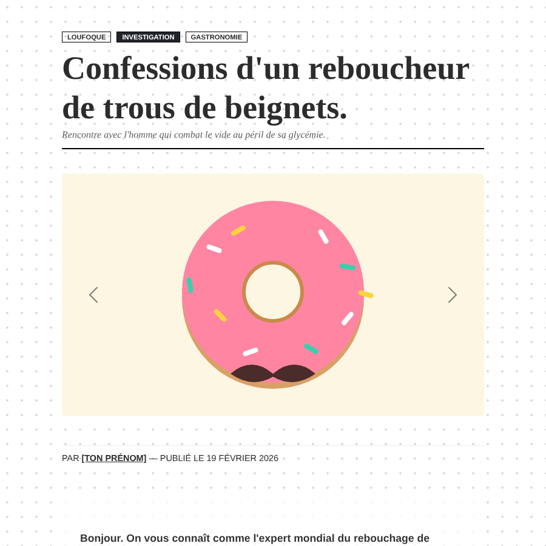

De zéro au site web complet en 20 défis.
Prêt·e·s ? On commence avec un index.html vide et un style.css presque vide (un simple motif de fond) !
Voici ce que vous aurez construit dans 55 minutes :

Un journal interactif, responsive et stylisé.
Ouvrez le dossier extrait de l'archive donuts.zip récupérée sur Pronote. Vous devez avoir :
index.html (votre structure)style.css (votre pinceau)images/texte-interview.txt (le texte de l'interview, à copier dans votre page)Action : Ouvrez index.html dans votre éditeur de code ET dans votre navigateur.
Commençons par écrire le contenu de notre site. Sans texte, pas d'info !
Objectif : Transformer un texte brut en contenu structuré.
On souhaite afficher un gros titre très important pour que le·la lecteur·rice sache tout de suite de quoi on parle. Comment faire ?
La balise <h1> définit le titre principal d'une page. Elle est cruciale pour le référencement.
<h1>Mon titre super important</h1>Dans le <body> de ton fichier index.html, insère le titre de l'article avec la balise <h1>.
Texte : Confessions d'un reboucheur de trous de beignets.
Sous le titre, on veut une phrase d'introduction un peu plus élégante et penchée. Quel outil utiliser ?
La balise <em> (emphasis) met le texte en italique pour créer une emphase.
<em>Une phrase d'introduction stylée.</em>Dans index.html, juste sous ton titre, ajoute l'accroche de l'article avec la balise <em>.
Actuellement, tout ton texte se colle sur une seule ligne. Comment créer des blocs de texte distincts ?
La balise <p> définit un paragraphe. Le navigateur saute automatiquement une ligne après.
<p>Ceci est un paragraphe bien rangé.</p>Enveloppe chaque réponse de l'interview dans une balise <p> dans ton index.html.
Comment attirer l'attention du·de la lecteur·rice sur un mot technique précis au milieu d'une phrase ?
La balise <strong> met le texte en gras. Cela indique une importance forte au navigateur.
C'est <strong>important</strong> !Cherche l'outil "pistolet à confiture quantique" dans ton texte et mets-le entre deux balises <strong>.
La personne interviewée cite plusieurs objets. Comment les présenter sous forme de liste propre ?
<ul> crée une liste à puces. Chaque élément doit être dans un <li>.
<ul>
<li>Objet 1</li>
</ul>Crée une liste <ul> avec 3 éléments <li> pour lister les accessoires du métier.
| Balise | Rôle |
|---|---|
<h1> |
Titre unique et principal |
<p> |
Paragraphe de texte |
<em> / <strong> |
Italique / Gras (Emphase) |
🚀 Mon contenu a du sens pour le navigateur !
Maintenant que nous avons le texte, nous devons l'organiser. Imaginez des tiroirs dans une armoire : c'est le rôle des <div>.
Créons les conteneurs pour ranger nos éléments.
On veut pouvoir colorer ou déplacer le bloc "Titre + Accroche" d'un coup. Comment les grouper ?
Dans index.html, entoure ton H1 et ton EM par une <div class="journal-header">.
Même question pour les paragraphes : comment isoler la zone de l'interview ?
Entoure tous tes paragraphes par une <div class="interview-content">.
Ton site est tout collé à gauche. Comment le centrer au milieu de l'écran proprement ?
Bootstrap propose la classe .container. Elle définit une largeur et centre tout automatiquement.
Entoure TOUT le contenu situé dans le body par une <div class="container mt-5">.
Indice : mt-5 ajoute une marge en haut (Margin Top 5).
Que la balise <div> est une boîte invisible qui ne sert à rien... tant qu'on ne lui donne pas un nom (class) pour la ranger ou la styliser.
Rappel : La classe .container est le secret pour centrer un site !
Bootstrap est un kit LEGO : au lieu de coder chaque style, on utilise des classes (ex: "container") déjà écrites par des pros.
Ouvrons enfin le fichier style.css !
L'écriture actuelle est trop "moderne". On veut une police qui rappelle les journaux à l'ancienne. Comment faire ?
Dans ton fichier style.css, change la police de tout le document :
body {
font-family: 'Georgia', serif;
}Le titre et le texte sont trop proches. Comment "pousser" les éléments vers le bas ?
Dans style.css, écarte le header du contenu :
.journal-header {
margin-bottom: 40px;
}💡 Margin = Espace extérieur.
Le texte touche les bords de son cadre. On veut qu'il "respire" à l'intérieur. Quelle propriété utiliser ?
Ajoute de l'espace intérieur à ton contenu dans style.css :
.interview-content {
padding: 30px;
background-color: white;
}💡 Padding = Espace intérieur.
Comment ajouter une ligne élégante pour séparer le titre de l'article ?
Applique une bordure sous ton header dans le CSS :
.journal-header {
border-bottom: 2px solid black;
}Mon site commence enfin à ressembler à un journal !
Margin vs Padding : Le Margin pousse les voisins. Le Padding gonfle la boîte de l'intérieur. Simple !
Comment ajouter des petites étiquettes colorées (tags) au-dessus du titre ?
Dans index.html, ajoute ce code juste avant ton titre :
<span class="badge bg-dark category-badge">Investigation</span>On veut afficher 5 photos, mais on n'a de la place que pour une seule. Comment créer un diaporama automatique ?
Bootstrap propose un composant tout fait : le Carousel. Il a besoin d'un ID pour fonctionner.
<div id="monCarrousel" class="carousel slide mb-5" data-bs-ride="carousel">
<div class="carousel-inner rounded">
<div class="carousel-item active">
<img src="images/donut-1.svg" class="d-block w-100" alt="Donut rose avec une moustache">
</div>
<div class="carousel-item">
<img src="images/donut-2.svg" class="d-block w-100" alt="Donut violet avec une corne de licorne">
</div>
</div>
<button class="carousel-control-prev" type="button" data-bs-target="#monCarrousel" data-bs-slide="prev">
<span class="carousel-control-prev-icon" aria-hidden="true"></span>
</button>
<button class="carousel-control-next" type="button" data-bs-target="#monCarrousel" data-bs-slide="next">
<span class="carousel-control-next-icon" aria-hidden="true"></span>
</button>
</div>Copie cette structure vide dans ton index.html, juste après le header.
Deux photos, c'est un peu court pour un diaporama. Comment en rajouter d'autres ?
Il suffit de dupliquer le bloc carousel-item. Chaque nouveau bloc sera une nouvelle "diapositive".
Ajoute une 3ème image au milieu du carousel-inner. Trouve une image libre de droits de donut (par exemple sur Wikimedia Commons), copie son lien et crédite son auteur·rice et sa licence.
Le carrousel est là, mais rien ne s'affiche à l'écran. Pourquoi ?
Le navigateur ne sait pas quelle image montrer en premier. Il faut lui dire laquelle est "Active".
Vérifie que la classe active est bien écrite sur une seule de tes div class="carousel-item".
Que je n'ai pas besoin de tout coder moi-même. En utilisant les bonnes classes de Bootstrap (carousel, badge), je gagne des heures de travail.
⚠️ Attention : L'ID du carrousel doit correspondre aux contrôles !
Le JavaScript gère l'interactivité. En important le script Bootstrap, vous utilisez des milliers de lignes de code déjà écrites pour animer vos boutons.
On veut que l'utilisateur·rice comprenne qu'il peut cliquer sur les badges. Comment changer leur couleur au passage de la souris ?
En CSS, on utilise :hover. C'est magique, cela ne s'active que quand on survole l'élément.
.category-badge:hover {
filter: brightness(1.2);
cursor: pointer;
transform: scale(1.05);
}Dans style.css, ajoute un effet de survol sur tes badges pour les rendre plus brillants.
Comment transformer la première lettre de l'article en "lettrine" géante comme dans un vieux livre ?
Utilise le pseudo-élément ::first-letter dans ton CSS sur les paragraphes.
p::first-letter { font-size: 70px; float: left; }Comment afficher la biographie secrète de Jean-Glaçage sans encombrer la page ?
On utilise les attributs data-bs. Le fichier script.js s'occupe de les transformer en bulles d'aide.
<span data-bs-toggle="popover" title="Bio" data-bs-content="Expert en trous.">
Jean-Glaçage
</span>L'attribut data-bs-content contient le texte secret. Vous pouvez y écrire ce que vous voulez : une blague, une bio, ou un secret !
Trouve le nom du reboucheur dans ton HTML et ajoute-lui les attributs de Popover.
Votre site est superbe, mais l'onglet du navigateur est vide et triste. Comment ajouter une petite icône personnalisée (Favicon) ?
On utilise une balise <link> spéciale placée dans le <head> de la page.
<link rel="icon" href="images/donut-favicon.svg">Dans index.html, cherche la partie <head> (tout en haut) et ajoute la ligne de l'icône Donut.
Vérifie l'onglet de ton navigateur après avoir actualisé !
Je sais maintenant :
🍩 Prochaine étape : Personnaliser mon propre article !
Vous maîtrisez maintenant les bases du Web Design.
La séance touche à sa fin. Ne perdez pas vos efforts !
Bravo, l'aventure continue la semaine prochaine !
C'est une valise fermée. On ne peut pas travailler dedans !
👉 Clic droit > Extraire tout
C'est votre stylo. C'est ici qu'on écrit le code.
C'est votre miroir. Il montre le résultat (Faites F5 pour actualiser !)